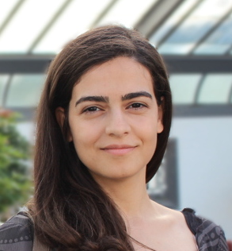

| Program | CFP | Dates | Organization | Venue |
Opposing the false dilemma of logical reasoning vs machine learning, we argue for a synergy between these two paradigms in order to obtain hybrid AI systems that will be robust, generalizable, and transferable.
Indeed, it is well-known that machine learning only includes statistical information and, therefore, is not inherently able to capture perturbations (interventions or changes in the environment), or perform reasoning and planning. Ideally, (the training of) machine learning models should be tied to assumptions that align with physics and human cognition to allow for these models to be re-used and re-purposed in novel scenarios.
On the other hand, it is also the case that logic in itself can be brittle too, and logic further assumes that the symbols with which it can reason are already given.
It is becoming ever more evident in the literature that modular AI architectures should be prioritized, where the involved knowledge about the world and the reality that we are operating in is decomposed into independent and recomposable pieces, as such an approach should only increase the chances that these systems behave in a causally sound manner.
You may find details about previous editions of this workshop via the links below:
The aim of this workshop is to formalize such a synergy between logical reasoning and machine learning that will be grounded on spatial and temporal knowledge.
We argue that the calculi associated with the spatial and temporal reasoning community, be it qualitative or quantitative, naturally build upon physics and human cognition, and could therefore form a module that would be beneficial towards causal representation learning. A (symbolic) spatio-temporal knowledge base could provide a dependable causal seed upon which machine learning models could generalize, and exploring this direction from various perspectives is the main theme here.
In this workshop, we invite the research community in artificial intelligence to submit works related to the proposed integration of spatial and temporal reasoning with machine learning, revolving around the following topic areas:
The list above is by no means exhaustive, as the aim is to foster the debate around all aspects of the suggested integration.
Application domains being addressed include, but are not limited to:
The submission link is available at easychair.org/conferences/?conf=strl2025.
Papers should be formatted according to the CEUR-ART style formatting guidelines here and submitted as a single PDF file.
We welcome submissions across the full spectrum of theoretical and practical work including research ideas, methods, tools, simulations, applications or demos, practical evaluations, and surveys.
Submissions that are 2 pages long (excluding references and appendices) will be considered for a short presentation, and submissions that are between 4 and 7 pages long (again, excluding references and appendices) will be considered for a regular presentation.
All papers will be peer-reviewed in a single-blind process and assessed based on their novelty, technical quality, potential impact, clarity, and reproducibility (when applicable). Extended abstracts of published papers are welcome, but they should demonstrate their close link to the topic of the workshop.
All questions about submissions should be emailed to the organizers via strl2025 at easychair.org.
Be mindful of the following dates:
Note: all deadlines are AoE (Anywhere on Earth).
The back-link to the URL of the workshop proceedings published with CEUR-WS.org is now available at https://ceur-ws.org/Vol-4102/.
|  | Prof. Reihaneh Rabbany is an assistant professor at the School of Computer Science at McGill University, and a core academic member of Mila – Quebec Artificial Intelligence Institute. She is also a Canada CIFAR AI Chair and on the faculty of McGill's Centre for the Study of Democratic Citizenship. Rabbany heads McGill's Complex Data Lab, where she conducts research at the intersection of network science, data mining and machine learning, with a focus on analyzing real-world interconnected data and social good applications. |
| Prof. Xin (Shane) Li is a Professor and Chair of the Section of Visual Computing and Computational Media with the College of Performance, Visualization, & Fine Arts at Texas A&M University in Texas, USA. He is also a Joint Faculty member in the Department of Computer Science and Engineering, College of Engineering and affiliated with the Aggie Computer Graphics Group. His main research interests include visual computing (geometric/spatiotemporal data processing and modeling), computer vision and deep learning, generative AI for image/3D content generation, 3D reconstruction and VSLAM, computational forensics, and computer-aided design. Canceled. | |
| Prof. Jun Zhou is a Professor and the Deputy Head of School (Research) of the School of Information and Communication Technology at Griffith University in Queensland, Australia, where he is also the Deputy Director of the ARC Hub for Driving Farming Productivity and Disease Prevention. His main research interests include hyperspectral imaging, computer vision, pattern recognition and their applications to remote sensing, agriculture, environment, and medicine. |
| 9:00 | Opening: Welcome and Agenda |
| 9:15 | Keynote: Spectral-spatial-temporal Modelling for Hyperspectral Object Tracking |
| Jun Zhou (Griffith University, Australia) |
| 10:15 | Coffee & Tea Break |
| 11:00 | Multimodal Spatio-Temporal Vehicle Speed Prediction Using Hexagonal Grids in Santiago, Chile |
|
Diego Silva (Andrés Bello National University, Santiago, Chile) Billy Peralta (Andrés Bello National University, Santiago, Chile) Orietta Nicolis (Andrés Bello National University, Santiago, Chile) Andres Bronfman (Andrés Bello National University, Santiago, Chile) Luis Caro (Catholic University of Temuco, Chile) Hans Lobel (Pontifical Catholic University of Chile, Santiago, Chile) |
| 11:30 | Exploring Spatial Language Grounding Through Referring Expressions |
|
Akshar Tumu (University of California San Diego, USA) Parisa Kordjamshidi (Michigan State University, USA) |
| 12:00 | Rule-Based Error Detection and Correction to Operationalize Movement Trajectory Classification |
|
Bowen Xi (Arizona State University, USA) Kevin Scaria (Arizona State University, USA) Divyagna Bavikadi (Syracuse University, USA) Paulo Shakarian (Syracuse University, USA) |
| 12:30 | Lunch Break |
| 14:00 | Keynote: Building the Foundations of Temporal Graph Learning: Visualization, Evaluation, and Applications |
| Reihaneh Rabbany (McGill University, Canada + Mila - Quebec AI Institute, Canada) |
| 15:00 | LoGo: Local-Global Context Modeling and Cross-Level Regression for Temporal Action Localization |
|
Li Xinxin (Chengdu Jincheng College, China) Yang Zhe (Southwest Jiaotong University, China) |
| 15:30 | Coffee & Tea Break |
| 16:15 | HexaClus: Interpretable Hexagonal Supervised Spatial Clustering |
|
Yameng Guo (Ghent University, Belgium) Seppe vanden Broucke (Ghent University, Belgium + KU Leuven, Belgium) |
| 16:45 | Multi-Level Pose-Guidance with Cross-Modality Fusion for Long-Term Spatio-Temporal Person Re-Identification | video |
|
Qingyuan Deng (Sichuan Normal University, China) Keyu Zhu (Sichuan Normal University, China) Jindan Wu (Sichuan Normal University, China) Xiaoning Li (Sichuan Normal University, China) Xinxin Li (Chengdu Jincheng College, China) Shihai He (Sichuan Mineral Electromechanic Technician College, China) Lin Feng (Sichuan Normal University, China) |
| 17:15 | Final Remarks |
| 17:30 | Closing |
| Prof. Parisa Kordjamshidi is an Associate Professor with the Department of Computer Science and Engineering of Michigan State University, US. Her main research interests are artificial intelligence, machine learning, natural language processing, and declarative learning based programming (DeLBP). Parisa is directing the research lab on Heterogeneous Learning and Reasoning. | |
| Assoc. Prof. Zhiguo Long is an Associate Professor with the School of Computing and Artificial Intelligence of the Southwest Jiaotong University, Chengdu, China. His research interests include fundamental and practical techniques in knowledge representation and reasoning, especially in qualitative spatial and temporal reasoning, and data representation and clustering in Machine Learning. | |
| Dr. Jae Hee Lee is a Postdoctoral Research Associate with the Knowledge Technology Group, University of Hamburg, Germany. His research aims to develop deep learning models for language understanding by leveraging multimodal information (e.g., vision, proprioception) with a particular focus on robustness and explainability. | |
| Prof. Xun Gong is a Professor and an Associate Dean of the School of Computing and Artificial Intelligence, Southwest Jiaotong University. He received the Ph.D. degree in computer science and technology from Southwest Jiaotong University in 2008. His research interests include pattern recognition, computer vision, medical image processing, and deep learning. |
| Prof. Mehul Bhatt is a Professor of Computer Science with the School of Science and Technology at Örebro University, Sweden. His basic research focuses on formal, cognitive, and computational foundations for AI technologies with a principal emphasis on knowledge representation, semantics, integration of commonsense reasoning & learning, explainability, and spatial representation and reasoning. Mehul steers CoDesign Lab, and directs the research and consulting group DesignSpace. | |
| Prof. Michael Sioutis is a Junior Professor of Hybrid AI with the Laboratory of Computer Science, Robotics, and Microelectronics of Montpellier and the Faculty of Sciences of the University of Montpellier, France. His general interests lie in artificial intelligence, knowledge representation and reasoning, data mining, logic programming, and semantic web. |
The workshop will take place in Montreal, Canada, co-located with IJCAI 2025; specifically, the worksop will take place at Room 516D at the Palais des congrès in Montreal, Canada.